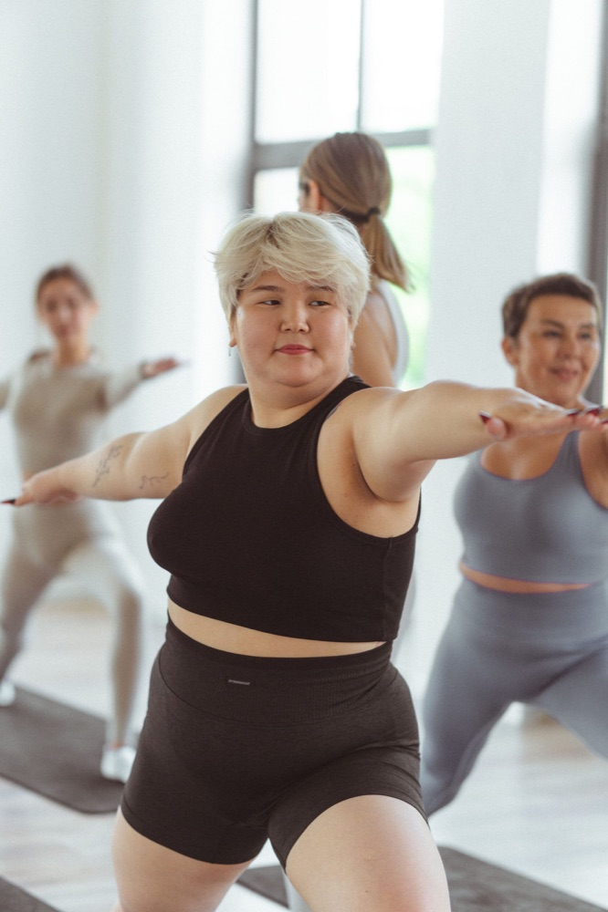
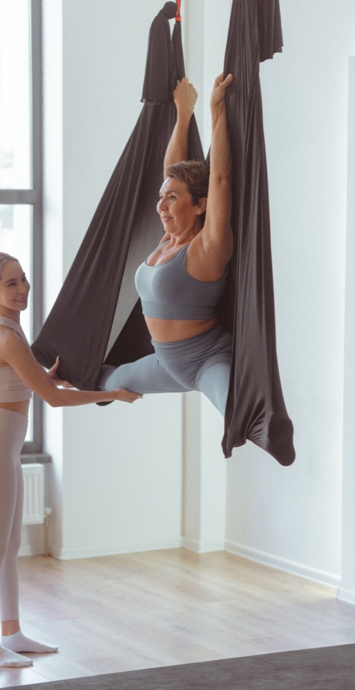
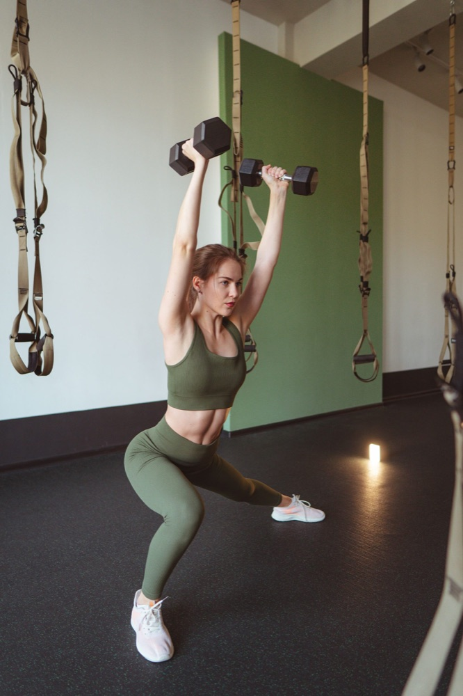
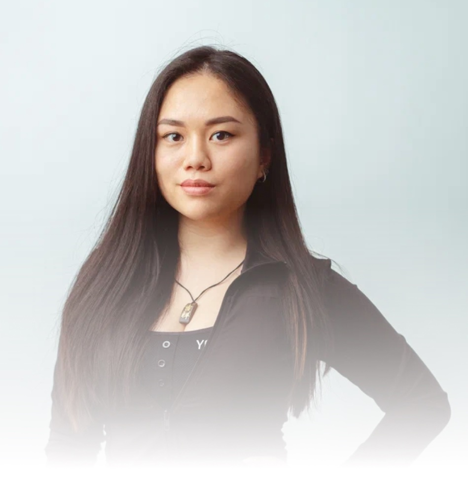

ДЫШАТЬ И ЧУВСТВОВАТЬYoga Mix
01Практика движения и дыхания, чтобы переключиться с повседневных забот на себя.
Фитнес и йога с заботой о тебе.
Место, где можно выдохнуть, почувствовать
себя и стать ближе к себе настоящей.
Можно начать с любого уровня подготовки
Не знаешь, что выбрать? Найди свой ритмМАЛЕНЬКОЕ ВРЕМЯ ДЛЯ СЕБЯ
Прислушайся к себе.
А мы подскажем, с чего можно начать.
Отложи список дел. Движение и дыхание помогут уделить внимание тому, как ты чувствуешь себя сейчас.
Выбор по настроению. Подходящую нагрузку обсуди с тренером.
01 / НАПРАВЛЕНИЯ
Сегодня — энергия. Завтра — спокойствие.
Выбирай то, чего хочется именно тебе.
7 направлений в одном абонементе.

ДЫШАТЬ И ЧУВСТВОВАТЬПрактика движения и дыхания, чтобы переключиться с повседневных забот на себя.

ПОЧУВСТВОВАТЬ ЛЁГКОСТЬРастяжка в гамаках. Новые ощущения, плавные движения и время для своего тела.

ОТКРЫТЬ СВОЮ СИЛУРабота с собственным весом и подвесными петлями для силы и выносливости.
Постепенно исследуй возможности своего тела через упражнения на растяжку.
Внимание к осанке, мышцам кора и качеству привычных движений.
Танец на каблуках, пластика и пространство для твоего самовыражения.
Бережная практика для нового этапа жизни. Обсуди возможность занятий с врачом.
02 / ПРОСТРАНСТВО ДЛЯ ТЕБЯ
В потоке дел так легко забыть о себе.
Balance — твоя пауза. Час, который принадлежит только тебе.
Женская студия, где можно чувствовать себя свободно и заниматься без сравнения с другими.
Йога, растяжка, силовые и танцы. Меняй направления под своё настроение и цели.
Расскажи тренеру о своём опыте и пожеланиях, чтобы вместе выбрать комфортный старт.
ЛЮДИ BALANCE
Познакомься с тренером.
Чтобы первый шаг был
немного увереннее.

BALANCE / PEOPLEСТАРШИЙ ТРЕНЕР
Знакомство с движением начинается
со знакомства с тобой.
Профиль из официального сайта Balance. Текущее расписание уточни у администратора.
СЛОВА, КОТОРЫЕ ГРЕЮТ
Место, где я собираю свои мысли и прихожу в себя
тренера знают свое дело
Удобное приложение для записи на тренировки
Фрагменты опубликованных отзывов. Полные тексты и другие мнения — в карточке студии в 2ГИС.
03 / ТВОЙ ПЕРВЫЙ ШАГ
Не нужно ждать понедельника
или «идеальной формы».
Мы поможем освоиться.
Напиши нам в WhatsApp. Расскажи, что тебе интересно, а мы поможем выбрать направление.
Администратор пришлёт актуальное расписание и условия первого посещения.
Возьми удобную спортивную одежду и приходи чуть заранее, чтобы спокойно познакомиться со студией.
В ТВОЁМ РАСПИСАНИИ ЕСТЬ МЕСТО ДЛЯ ТЕБЯ
Выбери направление — продолжим в WhatsApp.
Поможем с расписанием, расскажем о ценах
и ответим на твои вопросы.
04 / ЕСТЬ ВОПРОСЫ?
Начать можно без опыта. При записи расскажи администратору о своей подготовке, а перед занятием — тренеру об ограничениях. Вместе вы выберете подходящий формат.
Стоимость зависит от выбранного абонемента и действующих предложений. Напиши администратору, чтобы получить актуальные условия.
Актуальное расписание и свободные места подскажет администратор в WhatsApp. Выбери направление в форме выше — мы подготовим сообщение.
Удобную спортивную одежду и воду. Требования к обуви зависят от направления — уточни их при записи. Лучше прийти за 10–15 минут до начала.
Астана, улица Сыганак, 58/1, ЖК Europa Palace III. Открыть вход и маршрут в 2ГИС
ВЫЙТИ ИЗ ДЕЛ. ЗАЙТИ К СЕБЕ.
Сохрани адрес, выбери занятие.
Осталось только встретиться.
Часы работы и свободные места уточни перед визитом. В 2ГИС можно посмотреть расположение входа.